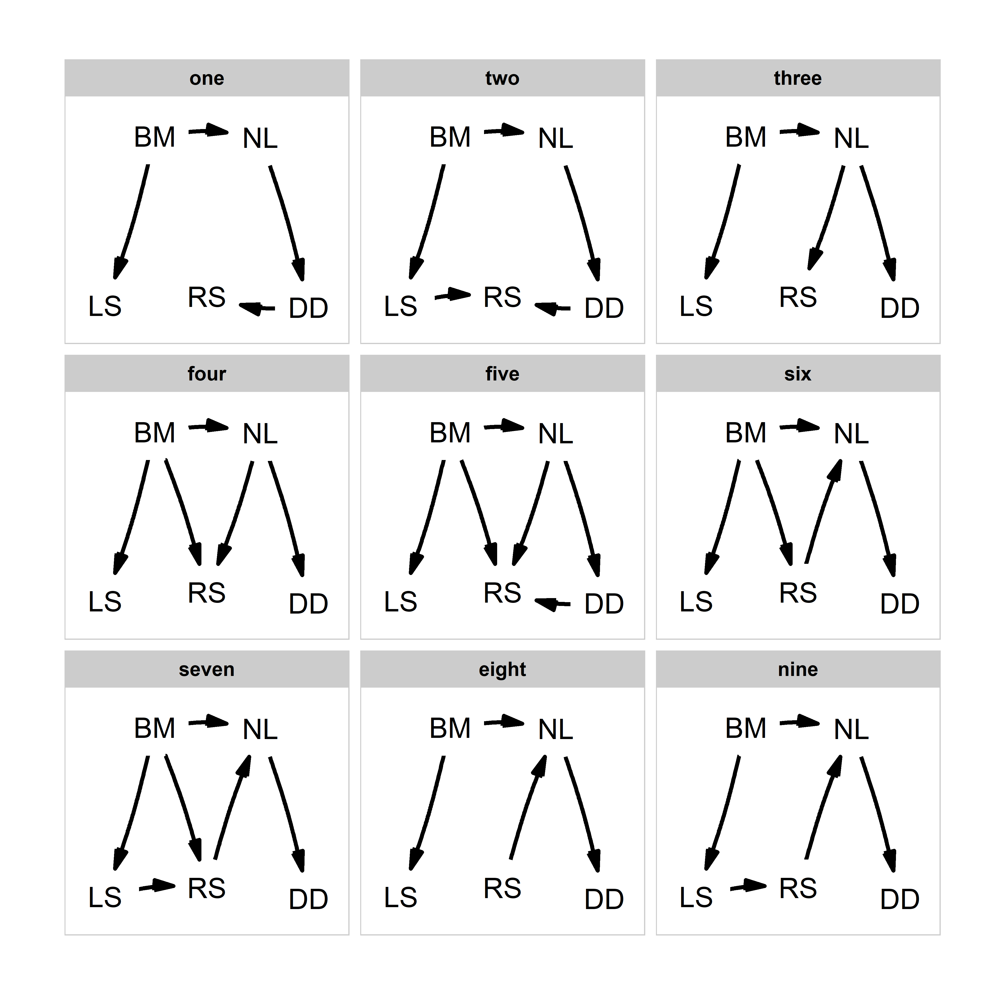
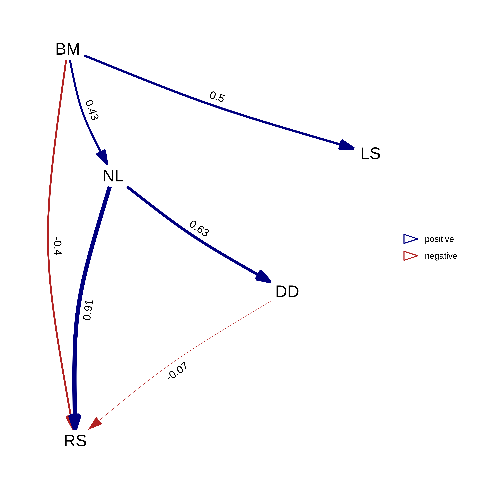

Use the phylopath package for an easy to use framework to perform phylogenetic path analysis (PPA).
PPA can be used to compare support for competing causal models of trait evolution, while taking shared ancestry into account. All you need is: 1. A clear set of models to test. 2. A data set of species with trait values. 3. A phylogeny of your species.
For a complete worked example, click “Get Started” above, or see the PeerJ paper.
This method was developed by Von Hardenberg and Gonzalez-Voyer. See citation() for info on correct citations.


The following published papers use phylopath:
2019
Iglesias-Carrasco, M., Jennions M. D., Ho S. Y. W. & Duchêne, D. A. Sexual selection, body mass and molecular evolution interact to predict diversification in birds. Proceedings B (2019), 286: 20190172. doi:10.1098/rspb.2019.0172
Guo W.‐Y., van Kleunen M., Pierce S., et al. Domestic gardens play a dominant role in selecting alien species with adaptive strategies that facilitate naturalization. Global Ecol Biogeogr (2019), 00:1–12. doi:10.1111/geb.12882
2018
Santini, L., González‐Suáre, M., Russo, D., Gonzalez-Voyer, A., Von Hardenberg, A. & Ancilotto, L. One strategy does not fit all: determinants of urban adaptation in mammals. Ecol Lett (2018). doi:10.1111/ele.13199.
Kennedy, J. D., Borregaard, M. K., Marki, P. Z., Machac, A., Fjeldså, J., and Rahbek, C. Expansion in geographical and morphological space drives continued lineage diversification in a global passerine radiation. Proceedings B (2018): 285. doi:10.1098/rspb.2018.2181.
Liedtke, H. C., Gower, D. J., Wilkinson, M. & Gomez-Mestre, I. Macroevolutionary shift in the size of amphibian genomes and the role of life history and climate. Nature Eco Evo. (2018). doi:10.1038/s41559-018-0674-4.
Murali, G., Merilaita, S. & Kodandaramaiah, U. Grab my tail: Evolution of dazzle stripes and colourful tails in lizards. J Evol Biol (2018). doi:10.1111/jeb.13364.
Mellor, E., McDonald Kinkaid, H. & Mason, G. Phylogenetic comparative methods: Harnessing the power of species diversity to investigate welfare issues in captive wild animals. Zoo biology (2018). doi:10.1002/zoo.21427.
Boratyński, J. S. & Paulina Szafrańska, Does basal metabolism set the limit for metabolic down-regulation during torpor? Physiological and Biochemical Zoology (2018). doi:10.1086/699917. Uncited.
Braga, M. P., Araujo, S. B. L., Agosta, S., Brooks, D., Hoberg, E., Nylin, S., Janz, N. & Boeger, W. A. Host use dynamics in a heterogeneous fitness landscape generates oscillations in host range and diversification. Evolution (2018). doi:10.1111/evo.13557.
Sol, D., Maspons, J., Gonzalez-Voyer, A., Morales-Castilla, I., Garamszegi, L.Z. & Møller, A.P. Risk-taking behavior, urbanization and the pace of life in birds. Behav Ecol Sociobiol (2018) 72: 59. doi:10.1007/s00265-018-2463-0. Uncredited.
Basset, Y., Dahl, C., Ctvrtecka, R., et al. A cross‐continental comparison of assemblages of seed‐ and fruit‐feeding insects in tropical rain forests: Faunal composition and rates of attack. J Biogeogr. (2018) 00:1–13. doi:10.1111/jbi.13211
Liao, W. B., Huang, Y., Zeng, Y., Zhong, M. J., Luo, Y. and Lüpold, S. Ejaculate evolution in external fertilizers: Influenced by sperm competition or sperm limitation? Evolution (2018), 72: 4–17. doi:10.1111/evo.13372
Lin Zhang, Kun Guo, Guang-Zheng Zhang, Long-Hui Lin and Xiang Ji. Evolutionary transitions in body plan and reproductive mode alter maintenance metabolism in squamates. BMC Evo Biol (2018), 18:45. doi:10.1186/s12862-018-1166-5
Xin Yu, Mao Jun Zhong, Da Yong Li, Long Jin, Wen Bo Liao and Alexander Kotrschal. Large‐brained frogs mature later and live longer. Evolution. (2018). doi:10.1111/evo.13478.
Send me a message to add yours to the list.